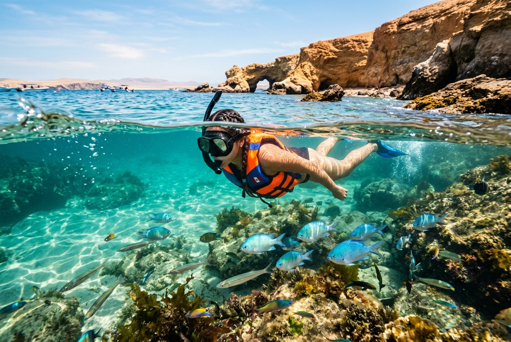

Detalles de la Aventura
El snorkel en Paracas es la forma más sencilla e interactiva de conectar con el mar de la Reserva: solo necesitas máscara, tubo y aletas — nosotros ponemos todo el equipo, incluido el traje de neopreno.
Viajamos en bote a bahías y caletas de aguas calmadas de la península, donde te sumerges acompañado en el agua por un guía local que te muestra la fauna: estrellas de mar de colores, cangrejos, peces de roca y praderas de algas.
Aclaración importante: en las Islas Ballestas está estrictamente prohibido nadar por regulación ambiental. Nuestro tour se realiza en zonas de la Reserva especialmente autorizadas para el snorkel: desconfía de quien te ofrezca lo contrario.
¿Cómo es la experiencia?
-
pool
Aguas Calmas y Seguras
Seleccionamos zonas protegidas del viento con oleaje mínimo para una remada segura y relajada.
-
waves
Fauna Marina Costera
Observa estrellas de mar de colores, cangrejos, peces de roca, erizos y algas flotantes.
-
family_history
Ideal para Familias
Apto para niños desde los 8 años. Usamos chalecos flotadores de snorkel para quienes no dominan el nado.
-
directions_boat
Paseo en Bote
El tour incluye la navegación costera por la península hasta la zona de inmersión.
Preguntas Frecuentes
¿Cuánto cuesta el tour de snorkel en Paracas?
El tour cuesta S/ 150 por persona e incluye la navegación en bote, guía que te acompaña dentro del agua, traje de neopreno, máscara, tubo, aletas y chaleco. Solo se paga aparte la entrada SERNANP a la Reserva (S/ 11).
¿Se puede hacer snorkel en las Islas Ballestas?
No, en las Islas Ballestas está prohibido nadar o hacer snorkel por ser zona de reproducción y protección de lobos marinos y pingüinos. Nuestro tour se realiza en playas autorizadas de la península de Paracas.
¿Es necesario saber nadar?
Se requieren conocimientos muy básicos de flotación. Proveemos chalecos salvavidas y trajes de neopreno que garantizan una excelente flotabilidad natural, además de ir acompañado por el guía con una boya de seguridad.
¿El agua es fría?
El mar de Paracas es de temperatura templada a fría (14°C - 17°C). Por ello te proporcionamos traje de neopreno de cuerpo completo que te mantiene abrigado y flotando con facilidad.
¿Desde qué edad pueden participar los niños?
Desde los 8 años, siempre acompañados de un adulto. Usamos chalecos flotadores de snorkel especiales para quienes no dominan el nado, y el guía permanece cerca del grupo en todo momento.
¿Qué debo llevar al tour?
Ropa de baño puesta, toalla, muda de ropa seca, bloqueador biodegradable y agua para hidratarte. El resto del equipo (neopreno, máscara, aletas, chaleco) te lo damos nosotros.
Reservar Tour
S/ 150
Por persona
- check_circle Navegación en embarcación rápida hasta la zona de snorkel
- check_circle Guía local de snorkel que te acompaña en el agua
- check_circle Equipo completo: máscara, snorkel (tubo), aletas y traje de neopreno
- check_circle Chaleco salvavidas obligatorio
- error Tasa de ingreso SERNANP de la Reserva Nacional (S/ 11.00)
* Salida diaria a las 11:30 AM desde el muelle de Paracas. Duración: 2.5 horas aprox.
Por qué elegir SolyMar Paracas
Seguridad Garantizada
Equipos modernos y guías certificados con seguros de pasajeros para tu tranquilidad.
Guía Local Experto
Guías nativos bilingües que te mostrarán los secretos mejor guardados de la Reserva.
Agencia Registrada
Somos operadores turísticos formales autorizados por las entidades pertinentes del Perú.
Atención Personalizada
Coordinamos tu reserva por WhatsApp de inmediato resolviendo cualquier consulta.
¿Listo para comenzar tu aventura?
Contáctanos hoy mismo para asegurar tus espacios en esta maravillosa experiencia. ¡Tenemos salidas diarias!
Contactar por WhatsApp